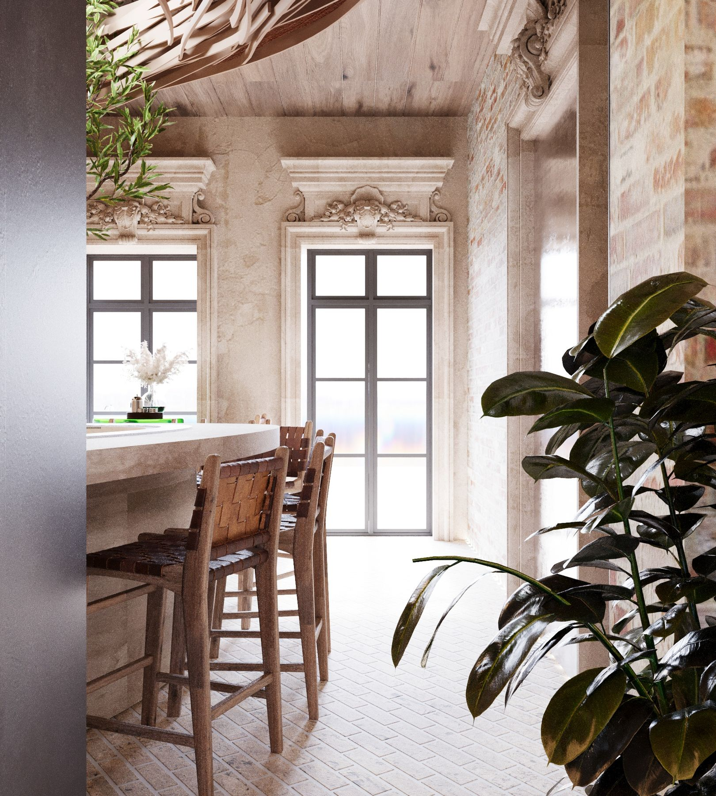
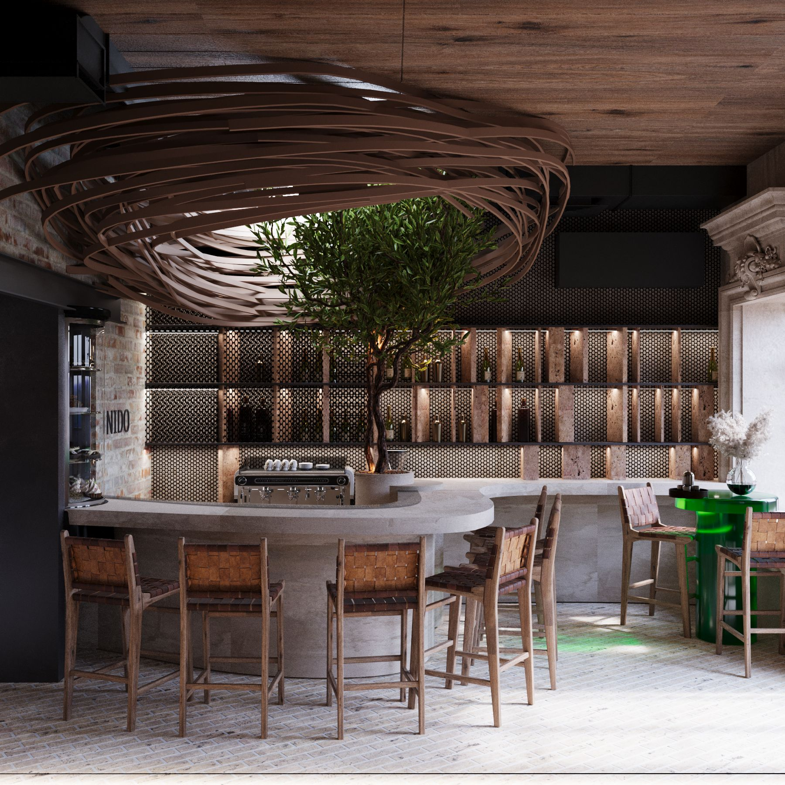
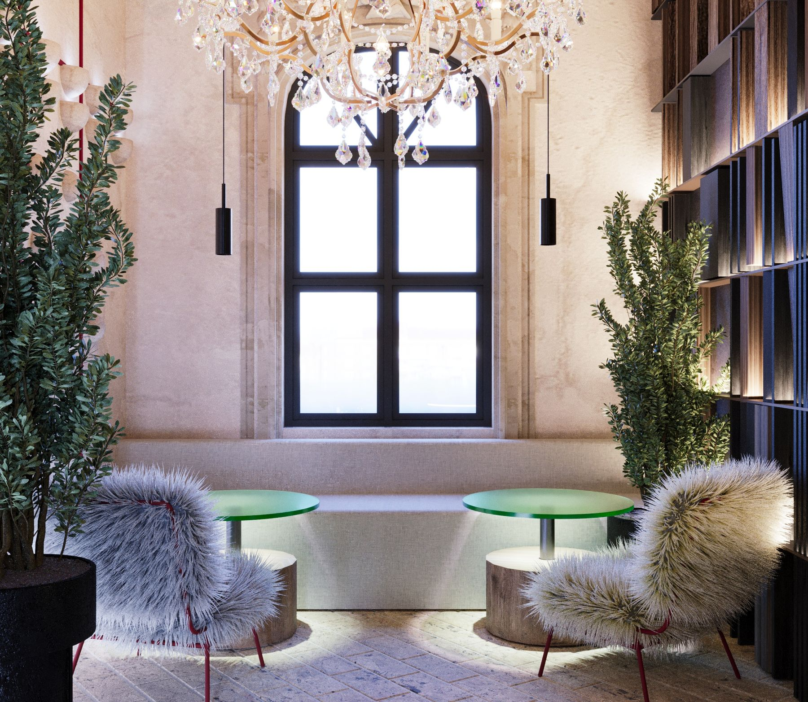
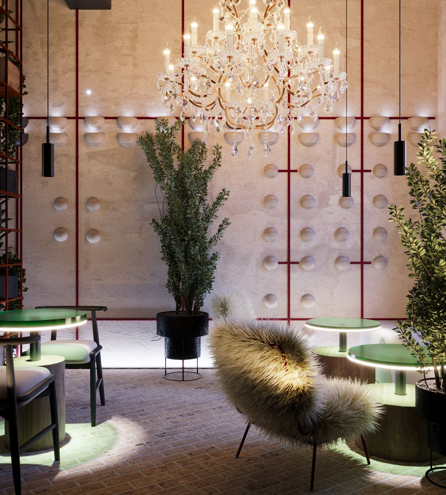
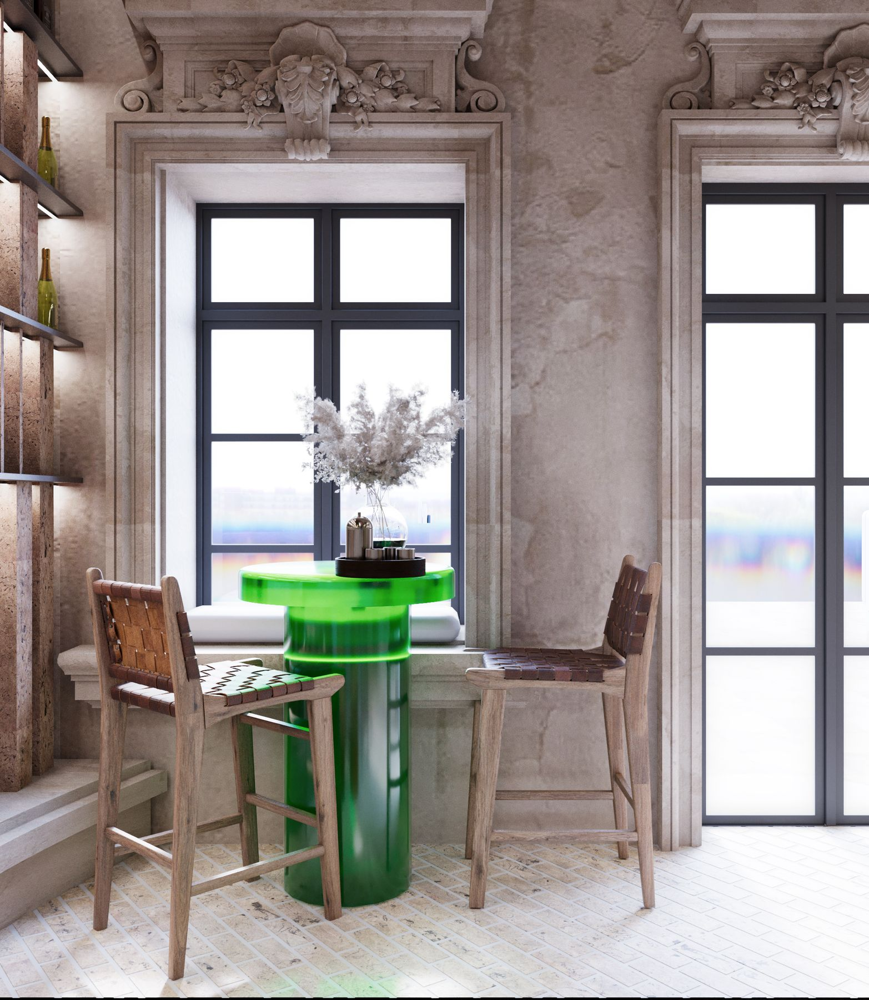
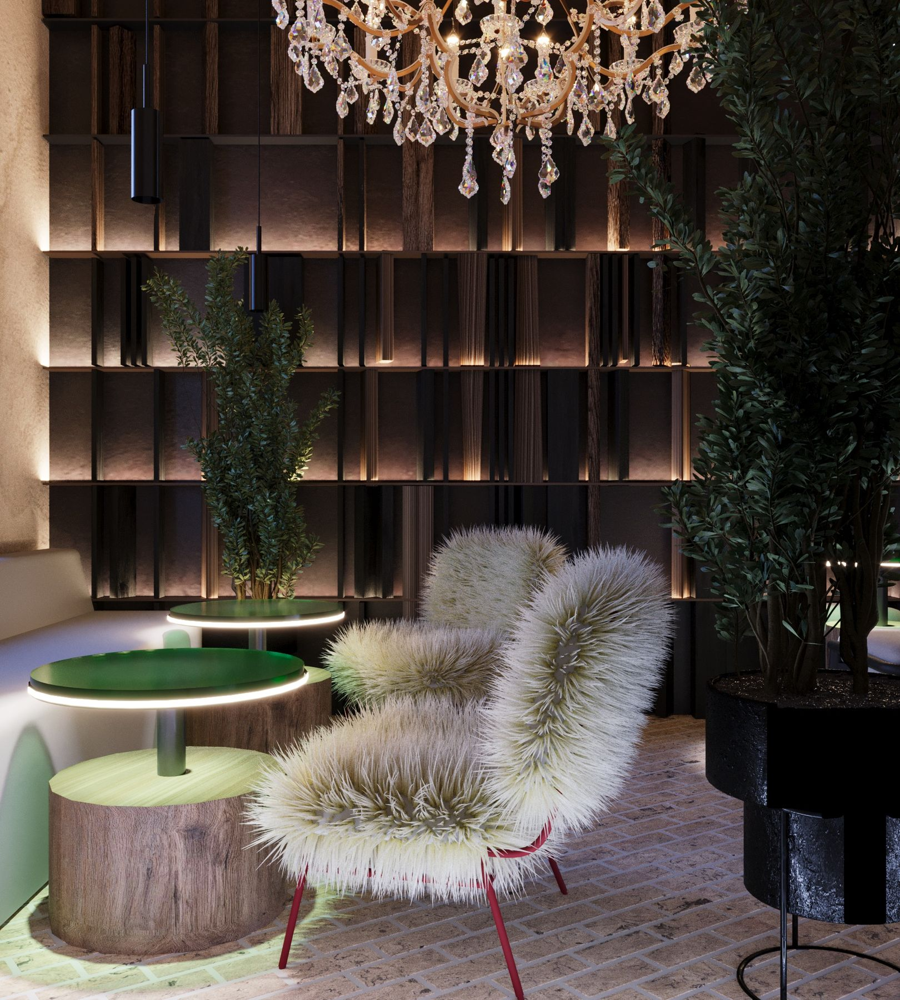
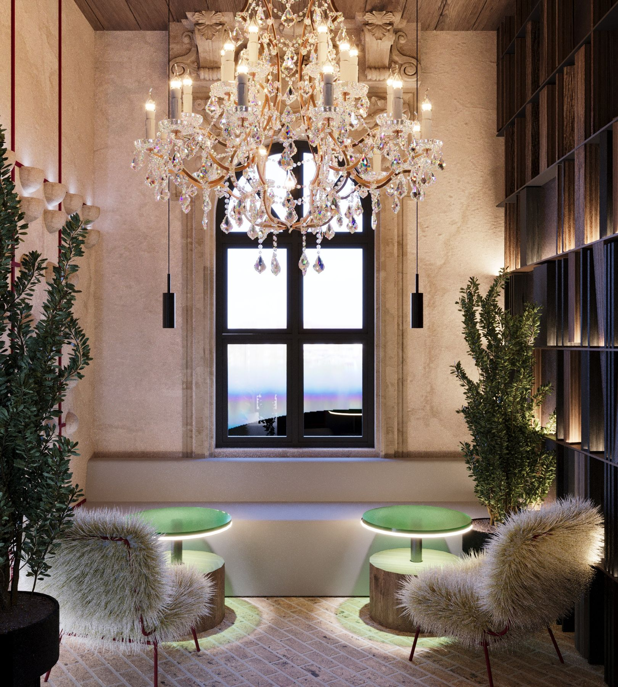
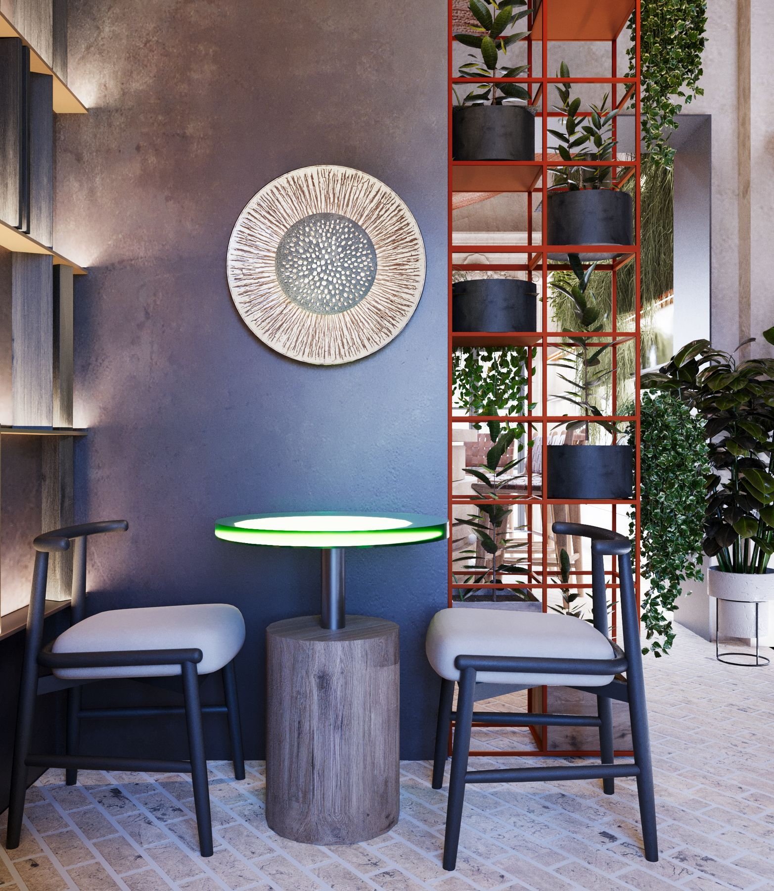
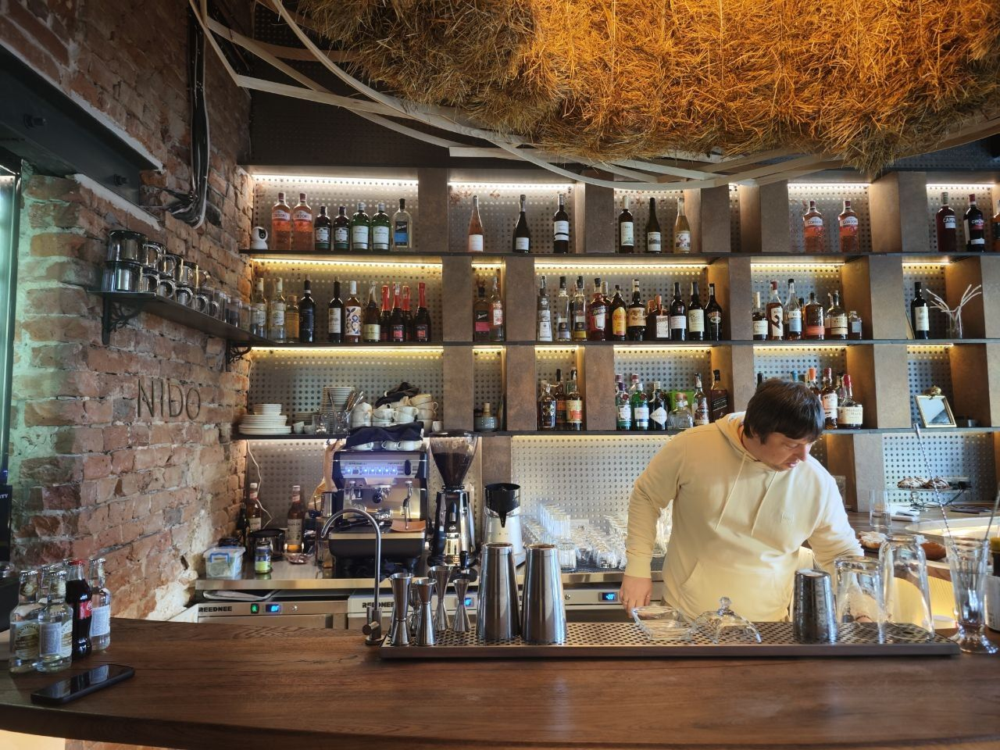

Задача — зробити залу, яку запам’ятовують з порога, не втративши робочу логіку бару й кухні.
Рішення: живе дерево в стійці, стеля-скульптура, цегла, камінь, шкіра. Світло веде гостя від входу до барної лінії.

Architecture | Hospitality
Кафе-бар, зібраний навколо образу гнізда. Денна посадка й вечірня атмосфера — один простір, два сценарії світла.
HoReCa · Cafe / Bar
Концепт, авторський нагляд
Задача — зробити залу, яку запам’ятовують з порога, не втративши робочу логіку бару й кухні.
Рішення: живе дерево в стійці, стеля-скульптура, цегла, камінь, шкіра. Світло веде гостя від входу до барної лінії.



Гніздо як центр зали: дерево в стійці й дерев’яна скульптура стелі задають ритм простору.


Денна посадка тримає спокій. Увечері світло збирає залу до барної лінії — той самий інтер’єр, інший сценарій.



